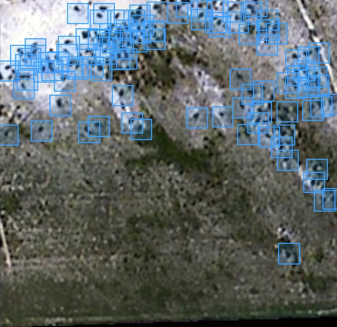

AgriTech · Aerial imagery · USA
BovEye — cattle detection
A 4-channel RGBN detection pipeline for aerial livestock monitoring — RF-DETR rebuilt for multispectral input and benchmarked against YOLOv11 with COCO-style rigor.

The challenge
Four channels, three-channel models
Pretrained detectors expect RGB — the near-infrared band doesn't fit their input layer.
Small objects, cluttered scenes
At altitude, cattle are tiny targets against vegetation and terrain that mimics them.
Operating points, not scores
The field threshold had to be chosen with evidence, not picked by feel.
The approach
Calibrated RGBN pipeline
Per-channel band normalization so the near-infrared signal survives preprocessing intact.
Patch-embedding surgery
Rebuilt RF-DETR's input path for 4-channel imagery while keeping pretrained weight value.
Head-to-head benchmarking
RF-DETR vs YOLOv11 on identical splits, scored with COCO metrics via pycocotools.
Threshold-sweep dashboards
Confidence sweeps summarized so the operating point was selected on evidence.
Outcomes
Native RGBN detection
The adapted detector consumes all four bands directly.
Benchmarked head-to-head
RF-DETR vs YOLOv11 under identical conditions.
Operating point
Chosen from threshold-sweep dashboards, not guesswork.